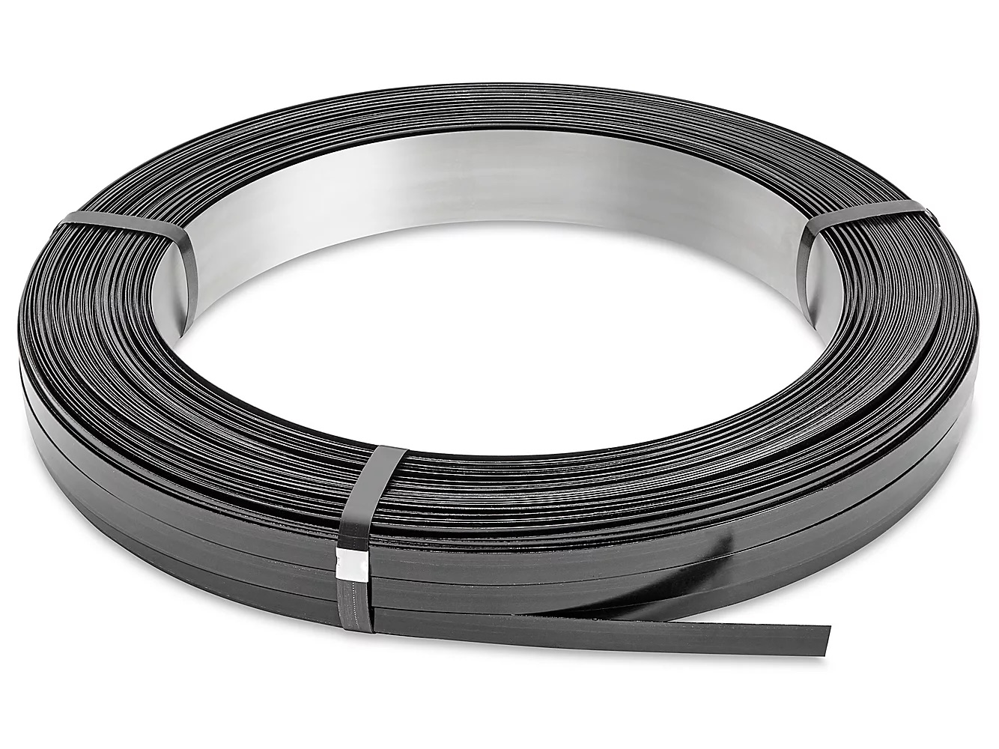
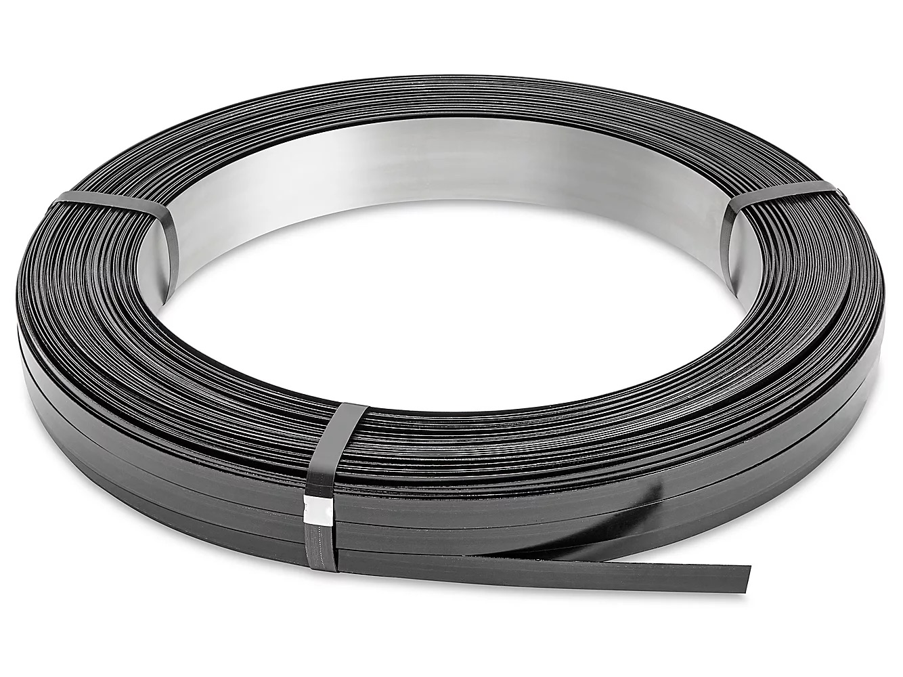

Patented: No.: 11,760,537 B1
Steel pallets can nest at a height of 0.3", compared to 2" or more with nestable plastic pallets.
Using steel creates a more durable pallet that provides more uses and a longer lifespan comapred to wood and plastic.
Ability to repair damaged pieces on site by just removing a few screws.
30% lighter than wood, and 20% lighter than plastic pallets.
Reusability reduces the money spent on repairing and replacing wood and plastic pallets.
Wood and Plastic pallets always end up in landfills. Steel can be constantly recycled into new steel, reducing your carbon footprint.

Created from thin gauge ultra high strength steel, this nestable pallet allows for full customization from materials, to parts and overall configuration.
Parts can be ordered and replaced on site with simple tools.
Created for all customer specific applications. No job is too big or small.
Low-cost, high-volume applications pallet alternativeLow-cost, high-volume applications pallet alternativeLow-cost, high-volume applications pallet alternative.
The current market for pallets consists almost entirely of wood or plastic pallets. While they have been the common use in the shipping industry, they come with considerable drawbacks.
Some of these include:
Made of lower quality materials that can only survive a few uses before needing repair or disposal.
Both materials can only stack so many in a reasonably tall stack. This creates a need for large spaces in order to simply store unused pallets.
Very common to be stored outside to save space inside warehouses, inviting the potential for theft.
The most innovative addition to the steel pallet is the nestability potential with stacks of these steel pallets. Compared to other nestable pallets, primarily made of plastic, the steel nestable pallets offer a very minimal storing option for a large quantity of pallets. Offering a shorter nested height by up to 3x compared to plastic pallets.
With the ability to stack the steel pallets at a much shorter height compared to plastic (Only 0.3" per pallet!), you can transport hundreds more pallets for a similar price compared to much fewer plastic pallets.
Located in Toronto, Sherwood Innovations ensures the high quality and care put into the design and production of our Steel Pallets. Through a metal stamping process we create the strongest and most durable pallets on the market.
IATF 16949 Certified
The Steel Nestable Pallet provides numerous benefits which include:
7,440 lbs/3,372 kg supported by a 24" x 24" Steel Pallet
24" x 24" Steel Pallet
Through rigorous development and testing, Sherwoods Nestable Steel Pallets allow for the use of high quality materials to achieve the most durable, heavy-duty and cost effective pallet on the market.
Integrating this new pallet material not only saves valuable space in the warehouse, but also saves money you would use to replace your traditional pallets.
Though they share the same purpose, the differences between the 3 main pallet materials is extensive and the material chosen can lead to thousands of dollars being lost through repair and replacement.
| Steel | Wood | Plastic | |
|---|---|---|---|
| Durability | Made from thin gauge high strength steel that allows for dozens of uses. | Constantly break. Limited to few uses unless repaired. | Constantly break. No way to repair. |
| Nestability | Nestable at 0.3 inches per nested pallet. | Not nestable at all. Only stackable. | Nestable at 1.6 inches per pallet. |
| Weight | Lightweight due to construction of thinner steel. | High quality wooden pallets are made of thick and heavy lumber. Can weigh 30-50 lbs. | Conventionally heavier than the steel pallets. Can weigh from 36-50 lbs. |
| Total Capacity | The 48" x 48" Steel Pallet can handle up to 13,000 kg of load. | An average wooden pallet of the same size can only hold up to 1,600 kg of load. | The best quality plastic pallet of the same size can only hold up to 5,000 kg of load. |
| Theft Potential | Low theft risk: The high nestability allows for easy indoor storage. | High theft risk: Almost always stored outdoors. | High theft risk: Mostly stored outdoors. |
| Savings | Reduced cost to replace stolen or damaged wooden and platic pallets. Will save thousand in the long run. | Regularly break. Need to be repaired or replaced constantly. | Prone to breaking as well. Must be replaced. |
| Steel Pallet | Wood Pallet | Plastic Pallet | |
|---|---|---|---|
| Maximum Weight (lbs) | 45,000 | 45,000 | 45,000 |
| Pallet Size | 48"x40" | 48"x40" | 48"x40" |
| Pallet Quantity (Maximum) | 1,500 | 400 | 920 |
| Trailer Size | 20ft | 40ft | 40ft |
| FTL Weight (lbs) | 45,000 | 16,800 | 31,280 |
Lower logistics cost:
Per pallet shipping cheaper with steel than with wood or plastic.
Lower material handling.
Lower warehouse space:
Shorter nesting height allows for many more pallets in the same sized spaces.
Lower insurance cost:
Theft prevention:
Easily store pallets inside and prevent the replacement costs for stolen pallets.
Eliminate shrink wrapping:
Slots for straps easily secure loads on the pallet. Reduce costs as well as your carbon footbrint.
Scrap Value:
When parts are replaced, you can recieve a chunk of your investment back through selling of scrap metal parts (~$0.58/lb).
We have to capability to create custom steel pallets in any size to meet all your job specific needs. Contact us for a quote on your specific size.
Contact Us!We have created multiple different formats of the nestable steel pallet to keep all different use cases in mind.
For use with moving individual, loose items, the Tool Steel Bin Nestable Pallet is a great addition to maintain cleanliness.
Option for wooden flooring available.
Max Load: up to 2,000 kg / 4,400 lbs
Designed specifically for slit steel, this pallet is the most effective way of handling large quantities of slit steel.
Max Load: up to 11,000 kg / 24,000 lbs


Built in sizes meant to fully handle large sizes and quantities of all corrugated sheets. Created from hot rolled steel, this pallet will guarantee the safe shipping and delivery of all your corrugated sheet products.
Max Load: up to 5,500 kg / 12,000 lbs
The banding steel pallet is the most optimal use of storing stacks of large spools of banding steel. Wooden and plastic pallets are prone to breaking under the weight of the banding steel. Our banding steel pallet ensures to prevent those same issues.
Max Load: up to 11,000 kg / 24,000 lbs
 

Created from thin gauge ultra high strength steel, the siding pallet allows the secure movement of all types of siding to any location.
To learn more about our new product, or to inquire about purchasing, contact us through email at hsidhu@sherwoodoem.com or by phone at 416-740-2777.
For any immediate questions fell free to fill out the form.